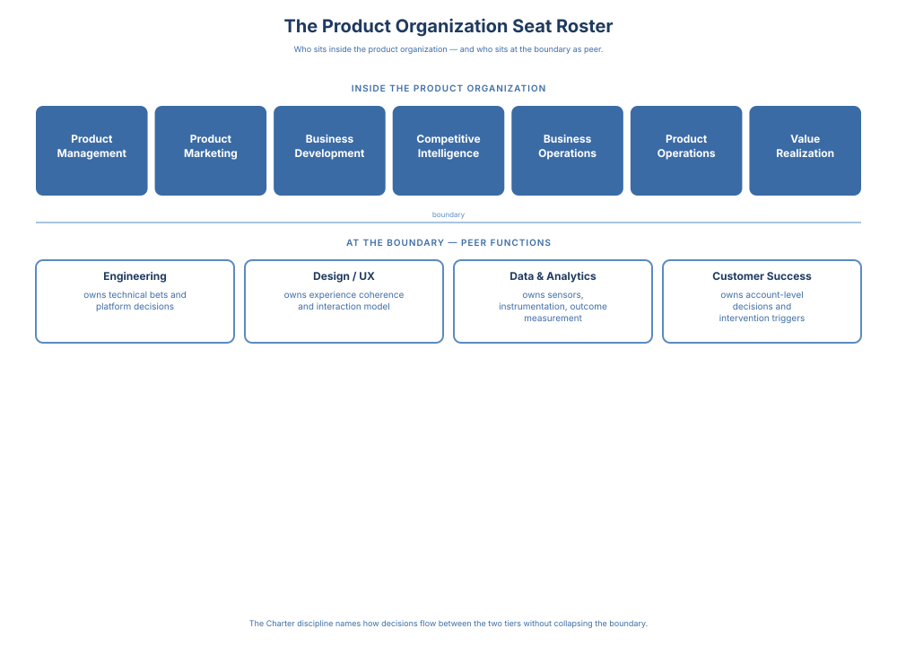

Vision to Value · 5 / 16
Chapter 3: Structure and Scope
Structure is not an org chart. It is the roster that tells the product organization who sits where, at what altitude, and with accountability for which decisions. Senior leaders inherit rosters shaped by history, politics, and short-term hiring, and those rosters quietly determine who decides, how fast, and with what information. When the roster is misaligned with the decisions the business actually needs made, strong strategy and strong talent still struggle to convert intent into outcomes.
This chapter names the roster. It sets defaults for the seats a scaled product organization needs at each of the three altitudes, explains where exceptions are justified, and surfaces the failure modes that appear when seats are missing or ambiguous. The reader leaves this chapter able to answer a single question about their own organization: who sits in the product organization, at what altitude, and accountable for what.
This chapter establishes defaults for roles and responsibilities, explains where exceptions are justified, and highlights the failure modes that appear when boundaries are left ambiguous. Decision systems exist to reduce friction, not to introduce committees, approvals, or performative alignment. If a forum does not measurably improve decision speed or quality, it should not exist. If your decision system adds latency without improving decision quality, you did not design leadership; you built bureaucracy.
This chapter also makes explicit the product leadership team's role as steward of the decision system itself.
Start with Decisions, Not Titles
Roles exist to host decisions. Titles exist to host careers. When organizations design roles around titles first, they optimize for reporting clarity rather than decision quality, and the result is overlap, escalation, and slow learning. The roster is built for all three altitudes. Tier 1 decisions need a CPO who can commit portfolio shape; Tier 2 decisions need a Director layer that can run the Decision Interface Charter; Tier 3 decisions need PMs, engineers, and PMMs whose weekly work the cadence can find. When the roster is designed for only one altitude, the other two get absorbed into rooms they should not be in.
Start with the decisions instead: what must be made repeatedly at this scale, which require proximity to customers, technology, or the business, and where does speed matter more than perfect information? Design roles to answer these, then align titles and reporting lines.
Example: if "launch readiness across platform and GTM" recurs every quarter, the Director designing the role should ask whether it belongs with a Launch PM accountable for the individual launch, or with a Group PM whose scope already spans platform and GTM. The title follows the decision.
Minimum set of decision interfaces most scaled orgs must explicitly design:
- Pricing and packaging as a shared decision right (Product, Finance, Sales - see below)
- Portfolio stop/continue (evidence threshold for stopping bets)
- Launch readiness (go/no-go; adoption readiness; enablement)
- Enterprise commitments & exceptions (what requires escalation; who says no)
- Metrics and success definitions (single source of truth; metric integrity)
- Adoption & value realization review (who triggers an account-level or cohort-level re-decision based on health-score movement; health scores treated as a decision artifact, not a reporting dashboard)
- Reliability / incident tradeoffs (when reliability overrides roadmap and who decides)
- Discount authority and exception approval (who can approve what discount level; what triggers escalation; how exceptions are logged and reviewed)
- Platform intake & prioritization (product → platform demand and SLAs)
Pricing deserves a separate word. Pricing and packaging decisions are contested across Product, Finance, and Sales: Product owns the value story and feature set, Finance owns margin and the economics, Sales owns deal reality and the price customers will pay. A Charter naming all three as required inputs, with Product accountable for pricing intent and Finance for the margin floor, prevents the common failure: pricing set by the loudest voice in the last quarterly meeting. If you design one Charter this quarter, make it this one.
The mechanics that follow rest on a single schema. The Decision Interface Charter in Appendix B is the master template, and every function-specific Charter in the book is an inherited instance of it. The Launch Narrative Brief is PMM's inherited instance; the Board Bet Review Charter is the CPO-Board instance; the nine interfaces in Chapter 7 are executive-altitude instances; and Appendix C carries seven per-function instances (PMM, Design, CS and Value Realization, Data, Business Development, Product Operations, Engineering) each specializing the master schema with function-specific fields while preserving the canonical seven (decision, accountable owner, forum, cadence, required inputs, decision rights, triggers, success criteria, exit). The architecture works because the inheritance is real: a Director who learns the master template learns the seven instances by specialization, not by repetition.
This blueprint deliberately limits artifacts. At scale, only three are required:
- Decision Records - what was decided, by whom, and why
- Decision Interface Charters - how recurring cross-functional decisions are made (full template in Appendix B)
- Cadence - when decisions are reviewed, revisited, or re-decided
Anything beyond should earn its existence by measurably improving decision speed or quality. The worked Charters in this book, the Launch Readiness example below, the function-specific Charters in Appendix C, the executive interfaces in Chapter 7, are not a longer list of requirements. They are the same Charter shown at different altitudes, so you can see the one required artifact take the form your decision needs.
The Charter is the same template at every altitude; what varies is how the fields are parameterized. A Tier 1 Charter carries a longer counterparty roster, a quarterly-and-up cadence, and re-decision triggers written against multi-quarter evidence windows. A Tier 3 Charter runs with two named owners, a weekly forum, and evidence windows measured in sprints. The altitude is a field setting, not a different artifact.
Cadence in Practice: A Director-Level Minimum. Cadence is the thinnest of the three artifacts because leaders write it last and defend it least. A Director of PM should be able to point to a minimum rhythm of five forums, each with a named decision class:
- Weekly team staff - PM status becomes PM tradeoffs; unblocks escalate here, not to email.
- Biweekly roadmap review - confirm commitments still have live success criteria; demote anything drifted into "ship it" mode.
- PRD / decision-record review - enforce the commitment-grade standard.
- Launch readiness - the accountable-owner forum from the Charter; never a status meeting.
- Quarterly talent and craft calibration - PM leveling, scope-per-PM, and stakeholder load as design decisions, not HR artifacts.
A cadence without a named decision class is a status meeting that will eat the calendar. Well-designed charters reduce ambiguity, prevent escalation by default, and make cross-functional collaboration faster without adding ceremony.
Example - Decision Interface Charter Decision: Launch Readiness for a flagship launch (GA date + scope; go / delay / de-scope) Accountable owner: Product Director (Growth) Decision forum & cadence: Weekly Launch Readiness Review from T-6 weeks; final decision no later than T-14 days Required inputs (must be ready by T-14):
- PMM: positioning statement, messaging framework, pricing and packaging constraints, target segment and buyer definition, launch narrative and comms plan, sales enablement readiness, launch tier classification (T1/T2/T3). Positioning statement, messaging framework, and launch narrative here are the three pre-commitment artifacts Principle 5 named; they enter this Charter as required inputs — which is how Principle 3 (Decision Quality) operates in practice when the decision is a launch readiness call.
- Competitive context: named alternatives the buyer is comparing us to, substitutes in the segment, category position, win/loss signal from the last two quarters, any known market-timing window or competitor move on this roadmap
- CS: onboarding playbook, training complete, support load forecast, escalation plan
- Eng: quality bar met, instrumentation live, rollout/rollback plan, SLO impact check
- Sales: ICP targeting + enablement confirmation; no custom promises beyond approved terms
- BD / Partner (if the launch depends on one): partner roadmap alignment, co-sell readiness, partner enablement complete, integration / API dependency status, procurement and compliance gates cleared, partner-side re-decision trigger agreed
- Escalation rule: Any "red" required input at T-14 → escalate to CPO + CRO within 24 hours; otherwise accountable owner decides
- Success criteria (phased outcomes, not single-point):
- Leading (T+2 weeks): activation → paid conversion lift against baseline; Week-1 ticket volume inside the forecast band
- Mid (T+6 weeks): adoption curve by cohort; discount-rate on closed deals inside target band
- Lagging (T+12 weeks): net retention on the launch cohort; CS ticket-to-ARR ratio normalized to pre-launch
- Re-decision trigger: If any leading indicator (T+2) misses its guardrail, the decision automatically reopens within 5 business days. If mid indicators (T+6) miss, the re-decision expands to include positioning/packaging. If lagging indicators (T+12) miss, the bet is formally reviewed at the portfolio layer, not re-relitigated at the team. Separately, the decision automatically reopens on market evidence - a named competitor ships a substitute inside the target segment, a new entrant redefines the category, or a pricing move compresses the premium this launch depended on. Market evidence and outcome evidence are treated as equally valid triggers.
In practice the accountable Product Director signs the charter; the Product Manager drafts every input, chases every owner, runs the pre-meetings, and writes the decision record. The Charter is a leadership artifact; its weekly life is PM operator work.
Example - Decision Interface Charter (post-launch companion) Decision: Adoption & Value Realization for the same flagship launch (continue / intervene / re-scope based on realized value) Accountable owner: Product Director (Growth) - same owner as the launch-readiness charter, so the build decision and the adoption decision sit with one leader Decision forum & cadence: T+2 activation check (team level), T+6 time-to-value review (product line level), T+12 retention and cohort NRR read (portfolio level) Required inputs (must be ready at each checkpoint):
- Product: usage telemetry, feature adoption depth, stability signals from instrumentation
- Value Realization / CS: customer-level adoption state, health-score trajectory by cohort, onboarding friction signal, expansion/renewal risk
- PMM: demand signal, message-market match, segment performance vs plan
- Data/Analytics: single source of truth on activation, TTV, retention, NRR - with explicit cohort boundaries
- Sales/RevOps: pricing-exception volume, deal-structure drift, expansion pipeline quality
- Escalation rule: Any guardrail missed at T+2 (activation) or T+6 (TTV) escalates to the decision owner within 24 hours; persistent miss at T+12 escalates to CPO + CRO with a re-decision recommendation (continue / re-scope / intervene / stop)
- Success criteria: Activation lift hit, TTV within target band, retention cohort trajectory on plan, NRR contribution visible by T+12
- Re-decision trigger: Outcome miss against any guardrail automatically reopens the decision; the re-decision is a named event, not a "keep shipping" default
This charter is the post-launch parallel to the Launch Readiness Charter. Launch readiness decides to ship. Adoption & Value Realization decides whether the ship turned into value. A product organization with the first charter but not the second is designed to launch products, not to get customers to value.
Decision Ownership Beats Perfect Clarity
Organizations rarely suffer from too much ownership. They suffer from shared responsibility without explicit decision ownership. When responsibility is distributed without clear authority, teams default to consensus-seeking and escalation; accountability becomes social rather than structural.
Default principle: Every meaningful product decision has a single accountable owner.
Vignette: a flagship launch had five "co-owners" for launch readiness, Product, Engineering, PMM, Sales, and CS. The quotation marks are the signal: the word "co-owners" appears in the vignette only because the organization used it, not because this book endorses it. Shared accountability is not ownership. Meetings were collaborative, weekly, and well-attended. Everyone had a checklist, and no one had authority. When a risk surfaced, the group deferred: "Let's align next week." No one could answer what would be true if the launch succeeded. No one could answer who decides to delay, de-scope, or say no to exceptions. Because ownership was shared, accountability became social. So decisions drifted until the calendar forced them. The fix wasn't more alignment - it was one accountable owner with required inputs. Collaboration stayed; ambiguity left.
Collaboration is expected. Accountability is not shared.
Exception:
Shared accountability can work in tightly coupled domains with stable teams and explicit decision protocols. Treat this as an exception that requires ongoing maintenance.
Who Sits in the Product Organization

Sidebar: The three relationships to strategy. The roster below lives inside a three-relationships architecture, distinct from the altitude tiering the Introduction named for time-horizon. Three functions formulate, elaborate, and execute product strategy: Product Management (what to build and why), Product Marketing (how the market will receive it and at what terms), and Business Development (which adjacent markets, partners, and ecosystems shape the strategy's boundary). Two sensors inform the decision system: Competitive Intelligence reads the market; Business Operations reads the business. A strategic bet is a promise; execution is the work that determines whether the promise is kept. Product Operations runs the operating layer the CPO designs, the cadence and the archive and the telemetry, so a well-formulated strategy becomes a lived one rather than a document in a drawer. Design, Customer Success, and Value Realization are the other execution seats, each owning a surface where the promise meets the customer. These three relationships to strategy are different roles a function plays, not rankings of importance. The CPO holds the system and chairs the Product Leadership Team (PLT). The three-relationships architecture is itself a CPO-owned installation move; the CPO is the architect of the architecture, not a resident of it. (See the Hardest Evolution sidebar in the Chapter 6 for the altitude pressure the Director layer carries inside this architecture.)
Company structures vary, but mature product organizations tend to include a consistent set of roles. These roles exist to host product decisions and ensure end-to-end continuity from intent to outcomes.
Common roles inside, or tightly embedded with, the product organization include:
- Product Management: accountable for problem framing, prioritization, and outcome definition. Each function in this list carries an inherited Charter instance; Appendix C holds the seven templates.
- Product Marketing: accountable for positioning, messaging architecture, launch narrative, competitive narrative, and sales enablement; co-accountable with Product and Finance for pricing and packaging decisions; holds the decision authority to block launches where market readiness is unmet. The altitude split inside the function matters: the Director of PMM carries the pre-commitment decisions (category, buyer-versus-user, messaging architecture, launch tiering) that shape what the product becomes; the senior Individual Contributor PMM carries messaging-architecture stewardship and the demo protagonist design; the junior Individual Contributor PMM executes against a director call already made. And it carries a cost most role maps do not name: the hardest PMM work happens before anyone writes a story, in the arguments about scope, buyer, and category that take place when the feature list is still malleable. When that work is done well, the launch reads inevitable. When it is skipped, the launch reads like a demo in search of a market. The PMM leader whose fingerprints are on the scope conversation is doing the job; the one whose fingerprints are only on the launch copy is cleaning up the job someone else should have been doing with them. The senior Individual Contributor altitude deserves a line of its own. The senior-Individual Contributor PMM is the person who holds the messaging architecture as an artifact across product lines - the message hierarchy that keeps corporate, product, feature, campaign, and in-product copy in agreement when scope changes. A functioning PMM organization has this role named explicitly; a PMM organization that has collapsed senior-Individual Contributor into director work discovers the gap two quarters later when a launch ships and the messaging does not hold across surfaces. The PMM Charter in Appendix C is the Dir-PMM-authored instance that makes positioning-before-build-lock a standing decision surface rather than a launch-cycle scramble.
- Business Development: the third core seat. Owns partnership strategy, make-vs-buy-vs-partner sourcing, and ecosystem posture as pre-commitment disciplines that shape what the product becomes by bringing partner, channel, and platform intent into Formulation and Elaboration before scope and sequencing harden. The signature pre-build accountability is closing the partnership decisions the roadmap will rest on - so the bet the organization commits to is the bet it can actually reach through its path to market. The durable artifact is the partnership architecture: which partners own which segments, which integrations carry which commitments, and which re-decision triggers reopen a partnership when the ecosystem moves. Business Development is to ecosystem strategy what PMM is to messaging: a function whose decisions shape what the product becomes, not a downstream handoff that cleans up after it.
- Product Design and UX: safeguarding experience coherence, usability, and discovery quality end-to-end. Design holds user research as an input feeding the interaction model (foundational jobs-to-be-done, pre-purchase and post-purchase usability), not as a separate seat with decision authority. The market-sensing half of research, analyst frame, category motion, and competitive substitute surfaces, belongs to Competitive Intelligence. Design is a required voice anywhere the promise meets the user. The Design Charter in Appendix C is the Dir-Design-authored instance that holds the interaction-model and design-system-as-portfolio-asset discipline as a standing decision surface.
- Competitive Intelligence / Market Insights: maintaining an external reference frame that feeds formulation and re-decision triggers. Three durable artifacts: a live threat register (named competitors, substitutes, and entrants scored against the bets they most plausibly move); a cadenced category read (what the category is becoming and on what timeline); and a standing Formulation input (the competitive-context slot in the Decision Interface Charter, delivered as evidence rather than commentary). Competitive Intelligence (CI) owns one signature decision: whether a market-evidence re-decision trigger has fired on a named bet. Analyst sensing (what the frame says about category motion) belongs here; analyst operations (briefings, narrative alignment) belong to PMM. Win/loss splits along the same line - CI owns win/loss as decision signal, PMM owns win/loss as GTM input; both read the same evidence with different accountability.
- Business Operations (Product): the business sensor. Owns P&L hygiene across regions, booking-data hygiene, GTM push through sales systems, and two-way product-initiative-to-business tracking. Prepares the financial and operational pre-reads that make portfolio and kill decisions defensible. Peer to CI; both deliver gating inputs to the portfolio review, not consultative commentary. (Note: distinct from Revenue Operations; see the Product Org Scope Map earlier in this chapter.)
- Product Operations: runs the operating layer the CPO designs - forum design, cadence integrity, instrumentation, decision record hygiene, launch readiness, platform intake, portfolio reviews. The Product Operations Charter in Appendix C is the Dir-Product Operations-authored instance that makes the operating-layer boundary explicit: cadence and ritual spec are inside, the content of the decisions those rituals gate sits with the accountable owner. (See dedicated subsection below.)
- Value Realization / Customer Success: accountable for adoption, time-to-value, customer health, and expansion as measurable product outcomes across the post-launch lifecycle. CS owns the account-level decision system (intervention, expansion conversation, cost-to-serve envelope). Value Realization owns the cohort and portfolio measurement system (TTV integrity, adoption-depth math, bet-invalidation calls at T+6/T+12). The Customer-Outcome Charter in Appendix C, co-authored by Dir CS and the Value Realization lead, is the standing instance that threads T+6 and T+12 cohort reads back to each bet's Business-Case artifact.
A note on Data and Analytics. Data sits outside the product-organization roster in the post-scale frame this book operates in: the function is an enterprise peer consumed by Product, with usage signal distributed across Value Realization, Customer Success, and Product Operations systems. Three scale-dependent variants exist (pre-Series-B embedded analyst inside Product, late-B to mid-C embedded data team reporting to Product, mid-C and later enterprise function reporting to CEO or CTO); the handoff design across stages varies by where Data sits on the chart at each scale band — applied product-line teams at pre-Series-B, embedded data team at late-B to mid-C, enterprise function at mid-C and later. Regardless of where Data sits on the chart, the operational interface between Product and Data is the metric-integrity contract described under Principle 6: single definition, stable window, single owner, single source of truth, documented exclusions. Principle 6 — Organizations Learn Through Outcomes — names learning as the work the decision system does once outcomes arrive, conditional on the metrics being trustworthy in the first place. The five-condition contract above is the operational form of that conditional; without it, outcome reads degrade into narrative and the learning loop runs on a metric that quietly shifted last quarter. The principle is revisited in full in Chapter 8. The Data and Analytics Charter in Appendix C is the standing instance that carries this contract as a gating input to every decision the product organization makes on its own outcomes, authored from the Data Science Lead's seat regardless of where the function reports.
Where the CI function lives varies by org - sometimes inside Product Marketing, sometimes inside Strategy, sometimes as a named CI function. Naming it explicitly forces the CPO to decide where it sits rather than letting it drift.
Two seats carry scale-dependent weight. Business Development is core when strategy depends on external leverage (platform, marketplace, API-first, OEM-embedded, regulated, channel-led), because much of what the product becomes is decided in the ecosystem. In direct-sales organizations with no partnership dependency, Business Development is thinner, or it federates into Corporate Development. But someone still owns make-vs-buy-vs-partner, the partner-mediated motion call, and the ecosystem re-decision triggers. That person belongs in Formulation, not downstream. Value Realization follows the same pattern: in enterprise SaaS where expansion revenue is the product, it is non-optional. In transactional or product-led models the function is thinner, and its signals sit inside Product Operations and CS. The test is the architecture test: is the function's decision surface in the room when strategy is formulated.
A related distinction: product-led value realization is driven by the product itself (onboarding flows, in-product activation, progressive disclosure); service-led is driven by humans (CSMs, onboarding specialists, implementation teams). Service-led organizations need a strong CS function inside or tightly adjacent to Product to avoid a structural break between build and adoption; product-led organizations can run with a smaller Value Realization function. Most are hybrids, but naming which mode dominates has real staffing and instrumentation consequences.
Embedded versus federated is a reporting-line choice, not a membership question. Product Marketing, Customer Success, Value Realization, and Product Operations are each core product functions inside the product organization's decision system regardless of reporting line. Membership is constant; reporting is the variable. A function whose decision surface belongs inside the product organization stays inside it no matter where its reporting line terminates on the chart.
Neither embed nor federate is universally superior. Embed when product decisions routinely require judgment the function alone can make and the cost of a handoff is late-stage rework. Federate when the function also serves a broader company scope than Product alone and a dotted line plus a shared KPI keeps decision quality intact. Federated scales cheaper; embedded decides faster. Most CPOs rework one of these boundaries per year as the organization's stage and strategy shift.
Product Marketing is the reporting-line choice CPOs debate most often. Embed Director of Product Marketing into Product when positioning is a product decision, typical in B2B platform and developer-tool companies where category, messaging, and pricing tiers are inseparable from scope. Federate into Marketing or the CRO when PMM serves broader corporate marketing scope, or when sales enablement must coordinate across multiple product lines. A dotted line to Product with a shared launch-readiness KPI is the common middle configuration, defensible in both directions. Under any of the three configurations, PMM still authors the PMM-specific Charter in Appendix C and still co-decides positioning with Product Management before build-lock.
A note on senior product leadership titles. In organizations with both a Chief Product Officer and a VP Product, the common split is that the CPO owns strategic intent - where the organization competes, which bets justify sustained investment, and how product leadership relates to the rest of the executive team - while the VP Product owns the conversion of intent into portfolio execution - sequencing bets, designing decision interfaces, and sustaining the decision system that carries intent through to outcomes. In smaller organizations a single senior product leader holds both; in larger ones, the two roles are a peer partnership, not a reporting hierarchy of seniority. For the rest of this book, "senior product leader" refers to whoever holds accountability for the decision being discussed at that altitude.
These roles define the decision interfaces. The Product Manager is the operator of those interfaces day to day - running the weekly synchronization with the engineering lead, closing the design review with the design lead, reconciling messaging assumptions with the PMM counterpart, resolving a customer-escalation exception with a CSM, getting instrumentation confirmed before a launch. The decision interface is designed by leadership; the interface is worked in Slack, in hallway conversations, and in the hour before a review. When this operating layer is invisible in the book's language, the decision system reads as something that happens in conference rooms rather than something that actually runs.
Product Operations: Steward of the Operating Layer
Product Operations is the most frequently misunderstood role inside the product organization, often reduced to program management, chief-of-staff work, or dashboard maintenance. None of those is Product Operations. At scale, Product Operations keeps the decision system operable.
What Product Operations is. Product Operations owns the operating layer: the scaffolding that makes the three artifacts (Decision Records, Charters, Cadence) findable, auditable, and durable. That means designing the forums the organization runs and killing the ones that do not earn their place; owning the operating calendar; enforcing decision-record hygiene so a Q2 charter is still findable in Q4; maintaining metric-definition integrity with Data/Analytics; and instrumenting launch readiness so "instrumentation live" at T-14 is auditable, not self-reported. Tooling is a multiplier on sound operating design and a silent amplifier of a broken one.
What Product Operations is not. Not program management (cross-functional program execution lives elsewhere). Not chief-of-staff work. Not the team that owns dashboards: Data and Analytics own the numbers; Product Operations owns the definitions, owners, and operating windows that make those numbers trustworthy.
The signature decision Product Operations enforces. Which forums live, and which die. Every organization inherits a calendar of recurring meetings nobody can defend on decision-speed or decision-quality criteria. Product Operations has the mandate, evidence, and credibility to retire them and design the small number that matter.
Without Product Operations at scale, cadence drifts, decision records go unfindable by Q3, launch readiness devolves into email threads, metric definitions diverge without anyone noticing in time, and platform intake becomes a queue nobody sequences. In an AI-accelerated organization each failure compounds faster.
Leadership altitude. In mature organizations, Product Operations is led by directors and VPs. If staffed below director, the organization has chosen to treat the operating layer as administrative, and it will decay accordingly.
Embedded vs. federated. The first org-design choice for Product Operations: central federated team reporting to the CPO, or talent embedded inside each product line with a thin central charter. Embedded gets proximity; federated gets consistency. Most mature organizations settle on a hybrid: embedded leads inside each line, with a federated head of Product Operations owning the operating calendar, metric dictionary, and cadence contract.
Engineering as a Peer Decision System
In most modern product organizations, Engineering is a peer pillar, not a sub-function of Product. The boundary is about accountability, not separation. Product leadership owns customer and business intent (what to build, why it matters, how success is measured); Engineering leadership owns technical intent (how to build it sustainably, with quality, resilience, and long-term system health). At team level, product, engineering, and design operate as an integrated trio; at the organizational level, Engineering as a peer function preserves clear decision ownership.
Cross-function interfaces get most of the attention. PM-to-PM interfaces (feature PM to platform PM, growth PM to core-product PM, launch PM to lifecycle PM) break as often and are harder to see because both sides report into the same function. Designing them is Director-of-PM work: who owns the handoff artifact, what "accepted" means between two PMs, and which decisions escalate to the Group PM rather than getting negotiated in a thread.
The Product Leadership Team
At scale, individual excellence is insufficient; decision quality depends on the PLT. The team is seated at the director altitude, by default seven seats: Product Management, Product Marketing, Business Development, Competitive Intelligence, Business Operations, Product Operations, and Customer Success with Value Realization. The Product Management seat on the PLT is held by the Director of Product Management (PM-Director), not by the VP Product. The VP Product operates one altitude above, as the executive-altitude counterpart to the CPO; the PM-Director is the director-altitude peer who sits on the PLT, owns hiring and leveling inside the PM function, and runs the cross-team PM coordination forum. (Appendix A names the seven seats; Appendix C carries the per-function Charters each PLT seat owns.) Their primary accountability is system design, not delivery oversight. They own:
- Defining decision boundaries across levels
- Clarifying which decisions are reversible and which are not
- Resolving cross-domain tradeoffs
- Ensuring strategy, execution, and outcomes remain connected
The PLT does not operate itself. At the VP altitude, Product Operations is the operating arm of the PLT: the function that makes the decision system run. Product Operations owns the cadence calendar, the decision-record archive, the charter library, the launch-readiness standard, and the instrumentation that lets the PLT see whether last quarter's decisions produced their committed outcomes. Without Product Operations at this altitude, the PLT reverts to ad-hoc coordination and the decision system stays an intention, not a practice.
When the PLT functions, teams move faster with confidence. When it does not, escalation rises and alignment becomes fragile.
Leadership Layers and Decision Elevation
As organizations scale, leadership layers increase and add latency rather than leverage unless designed carefully.
Default guidance:
- Decisions live as close to the work as possible
- Leaders define decision frames, not solutions
- Elevation is reserved for decisions that materially affect strategy, risk, or cross-team coordination
Before the CEO-sits-here and board-sits-here placements, there is a quieter question most scaling organizations get wrong at the Director layer. Every Director of Product Management runs an unnamed monthly internal check: am I doing the work that got me here, or the work of the role I was promoted into? The check is private; the stakes are public. The pattern repeats at every altitude above Director, and because it is first encountered without awareness here, this is where the decision system either absorbs the evolutionary pressure by design or leaks it as Director fatigue. The sidebar in the Chapter 6 names that pressure, and what the leader has to stop doing for the Director layer to hold.
Where the CEO Sits in the Decision System
The CEO is not above the decision system. The CEO is a node in it - with specific, bounded accountability.
The CEO owns strategic intent. Which bets the company is making. Which bets it is explicitly not making. The capital envelope, the time horizon, and the outcome that defines success.
The CEO does not own decision elaboration. Translating intent into product decisions, commitments, and execution belongs to the CPO and the product leadership team, working with peer leaders. When the CEO re-enters elaboration decisions - re-opening settled scope, re-litigating pricing, re-assigning ownership mid-cycle - that is micromanagement disguised as strategy. It is the most common way a decision system breaks from the top.
The CEO's signature decision is the portfolio. What gets funded, what gets stopped, and what gets renewed based on outcome evidence. That decision sits with the CEO. The product organization's job is to make it legible.
The Board as a Decision Interface
For any product organization operating inside a board relationship - venture-backed, PE-owned, or public - the board is not a stakeholder. It is a decision interface, with the same anatomy as every other interface in this book.
The Decision Interface Charter pattern in Appendix B applies verbatim. What changes is the inputs: typically financial performance, competitive position, capital allocation, talent, and material bet outcomes. The decision rights typically include portfolio-level stop / continue / renew calls, capital commitments above a threshold, executive compensation, and M&A. Everything else is information, not decision.
The failure mode is symmetric to every other interface in the book: a board that enters elaboration decisions (product scope, pricing, hiring below the executive team) has become a dysfunctional interface. The correction is the same: write the charter, name the inputs, name what is and is not a board decision, and run a cadenced forum against it. Treated this way, the board interface converts board preparation from theater into leverage, and gives the CEO a structured basis for pushing non-board decisions back down to the operating committee. The full specification, the Board Bet Review Charter modeled field-for-field on the Decision Interface Charter but specialized for the quarterly portfolio surface, lives in Chapter 7.
Anti-pattern:
Senior leaders routinely revisiting decisions that teams are accountable for.
Correction:
Explicitly define escalation criteria and decision ownership by level.
Responsibility Models Are Secondary to Decision Ownership
Responsibility matrices document decision ownership once it has been designed. They cannot substitute for the design work. Used well, they reflect a decision already made. Used poorly, they paper over an unresolved ownership question with a chart that looks authoritative and changes nothing.
Decision rights are designed and negotiated. Power dynamics, legacy authority, and organizational history shape how decisions actually get made. Effective leaders use principles, forums, and explicit ownership to depersonalize conflict so disagreements are resolved through structure rather than status. Multiple owners or approvers signal unresolved leadership decisions.
Common Structural Failure Modes
Note on terminology. The "Failure Mode" labels in this section name specific matrix-organization failure patterns. They are distinct from the Mode 1 / Mode 2 dispatch grammar specified in §2 of the Decision Provenance Standard, which classifies how decisions are routed (single-owner vs. shared-authority). The two usages share the word "Mode" but otherwise have no relationship.
Failure Mode 1: Matrix Without Decision Rules. Matrix structures promise flexibility and deliver confusion. Signal: frequent alignment meetings with unclear outcomes. Fix: explicitly assign decision ownership for each axis of the matrix.
Failure Mode 2: Role Inflation. Roles expand to absorb ambiguity; titles broaden while accountability narrows. Signal: overlapping roadmaps and competing priorities. Fix: periodically reset role charters and decision boundaries.
Failure Mode 3: Structure Lags Strategy. When strategy shifts and structure doesn't, teams execute yesterday's priorities efficiently. Signal: strong delivery metrics paired with weak business outcomes. Fix: revisit structure whenever strategic intent changes materially.
Failure Mode 4: Leadership Vacuum at the Mid-Layer. Senior leaders set direction, teams execute, but no one owns cross-team tradeoffs. Signal: persistent prioritization conflicts and slow portfolio learning. Fix: strengthen mid-layer accountability for sequencing and focus.
Failure Mode 5: The Decision System Broken From the Top. Every failure mode above assumes the product organization is the source of the break. In roughly half of real engagements, the source is the CEO. Signal: the CEO re-opens settled decisions, re-enters elaboration work, treats the product organization as a political instrument, or confuses "my strategic vision" with an organizational commitment with resources, timeline, and success criteria. Cost: the organization leaves decisions informally open, which looks like agility and is actually decision-latency in disguise; outcomes erode and senior talent leaves. Fix: write the charter, name what is and isn't a CEO decision, run the cadence against it. When the CEO-level boundary is explicit, the rest of the system stops absorbing re-opened decisions as normal.
AI augmentation can live inside the seat, not next to it. Each PLT seat can extend with an agent layer that drafts under the seat's standard. The interface contracts between seats stay human to human. The Charter can name which decision rights are non-delegable to agents, line by line, and the per-seat AI-acceptance rate can enter the PLT review as a calibration signal rather than a productivity metric. A seat that ships its agent's drafts unchanged is a seat the system has not yet ratified, regardless of what the title says.